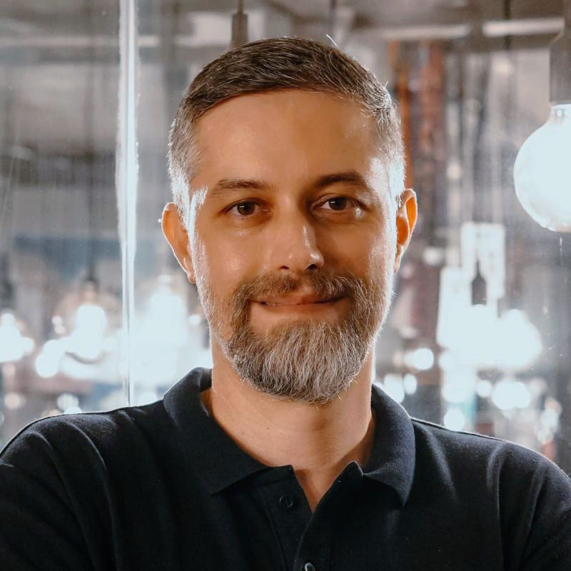
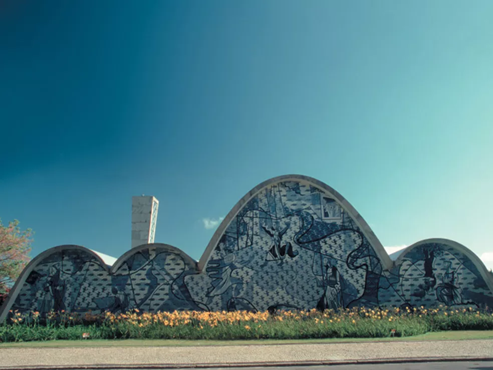
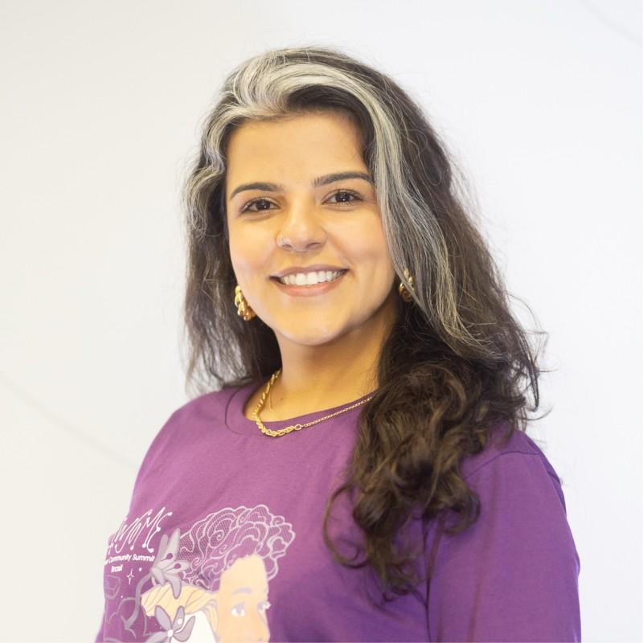
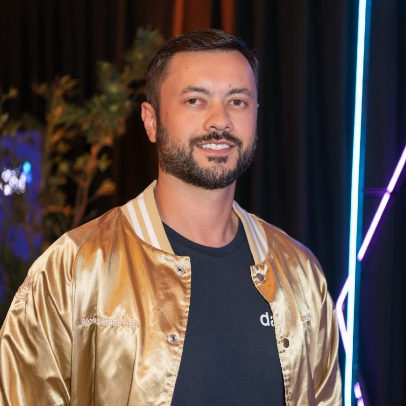
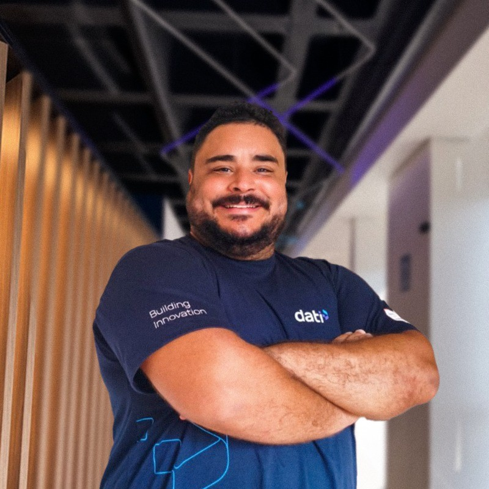
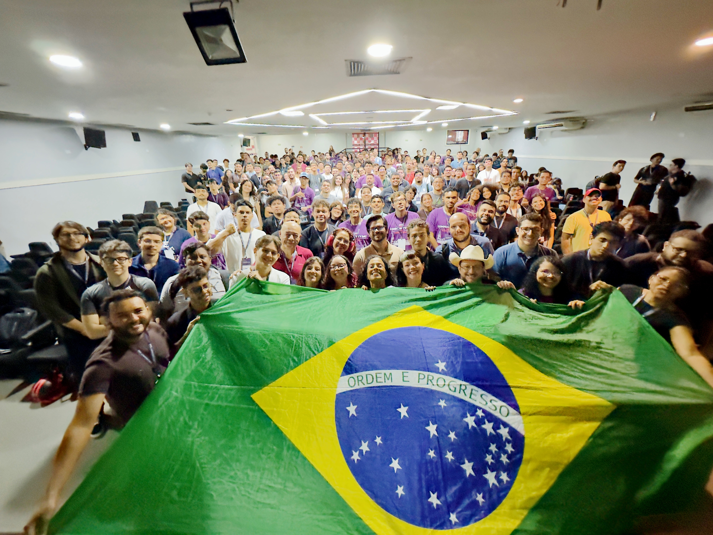
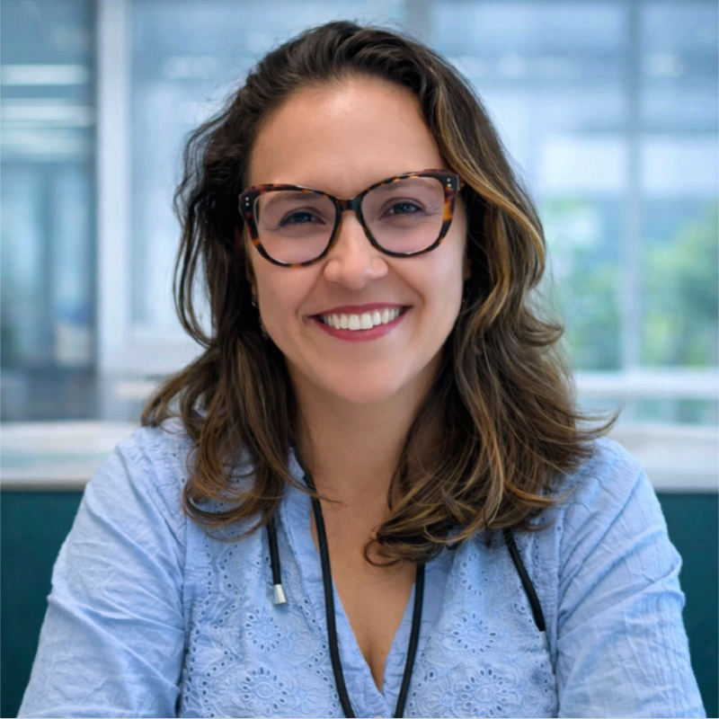
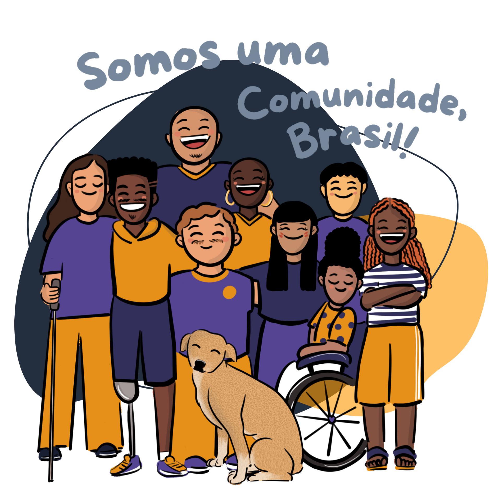

Brasília · 27 de junho
Brasília · 27 de junho
Centro-Oeste
204presentes

OrganizadorWagner Landim
Temporada encerrada · 2026
Uma temporada inteira de encontros, ideias e conexões. Relembre os momentos que aproximaram a comunidade AWS de todo o Brasil.

Uma temporada, cinco encontros
Veja um pouco de cada edição e quantas pessoas estiveram presentes em cada região.
Brasília · 27 de junho


Belo Horizonte · 22 de agosto
 Curitiba · 19 de setembro
Curitiba · 19 de setembro

Salvador · 10 de outubro


Belém · 31 de outubro
A comunidade continua
Obrigado a quem participou, palestrou, organizou, patrocinou e fez cada encontro acontecer. Acompanhe os canais da comunidade para saber das novidades.
Acompanhar a comunidade
Os AWS Community Days são eventos organizados pelos grupos de usuários AWS do mundo inteiro, com o objetivo de proporcionar discussões e demonstrações de serviços AWS, lideradas por usuários e empresas que são referência no Brasil e no mundo.
Acreditamos firmemente que aprender em comunidade é uma das melhores formas de se aprofundar em conceitos, se conectando a pessoas com um objetivo comum: aprender e compartilhar conhecimento de forma igualitária, segura, justa e acessível.
Todas as pessoas são bem-vindas para colaborar e fazer parte desta jornada de conhecimento e compartilhamento. As atividades do AWS Community Day Brasil são guiadas pelo Código de conduta.
Momentos
Confira como foram as edições anteriores do AWS Community Day Brasil.